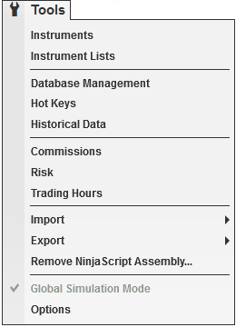

|
<< Click to Display Table of Contents >> Tools Menu |


|
Tools Menu
|
<< Click to Display Table of Contents >> Tools Menu |
|
The following menus and items are available via the Tools menu of the NinjaTrader Control Center.

Opens the Instruments window |
|
Opens the Instrument Lists window |
|
Opens the Database Management window |
|
Opens the Hot Keys window |
|
Opens the Historical Data window |
|
Opens the Commissions window |
|
Opens the Risk window |
|
Opens the Trading Hours window |
|
Opens the Vendor Licensing window |
|
Import |
Opens the Import Sub Menu; Backup File, Historical Data, NinjaScript Add-On, Stock Symbol List |
Export |
Opens the Export Sub Menu; Backup File, Historical Data, NinjaScript Add-On |
Opens the Remove NinjaScript assembly window |
|
Enables or Disables Global Simulation Mode (Note: Global simulation mode can only be enabled with a live NinjaTrader License) |
|
Opens the Options window |